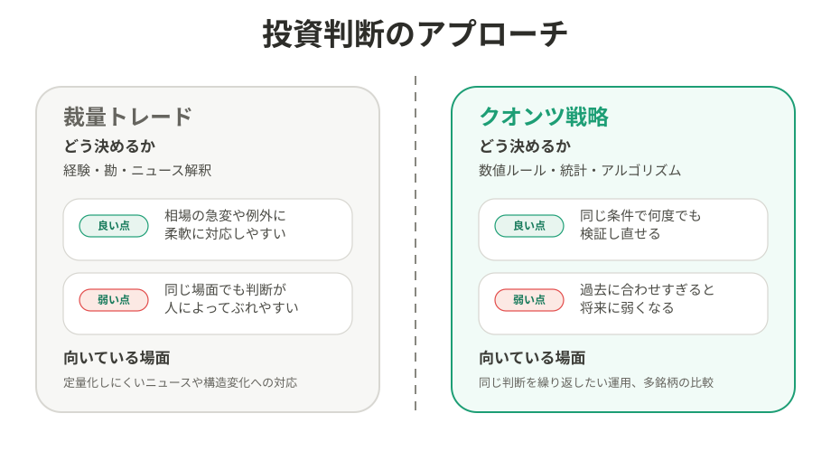
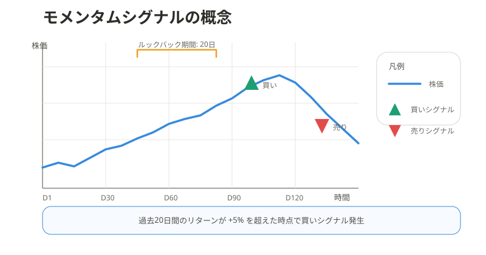
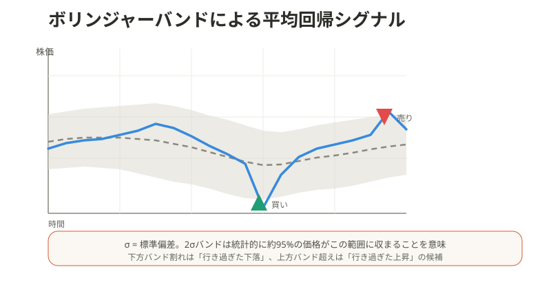
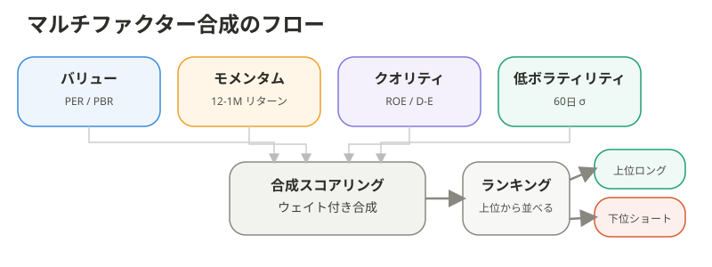
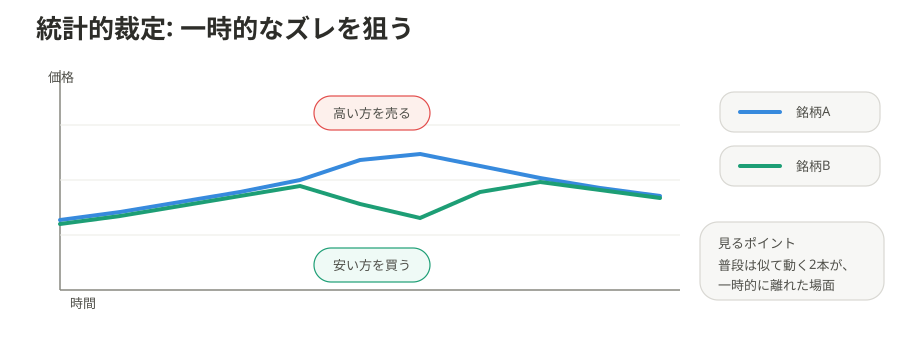
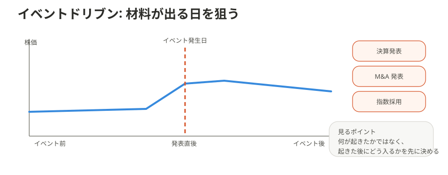
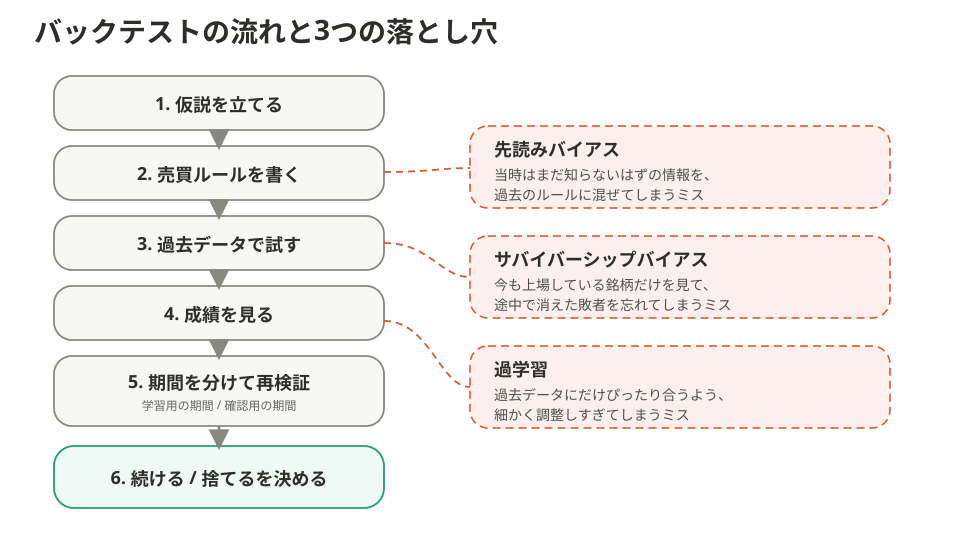
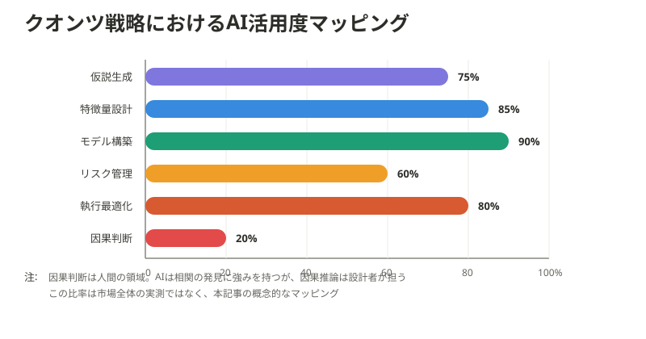
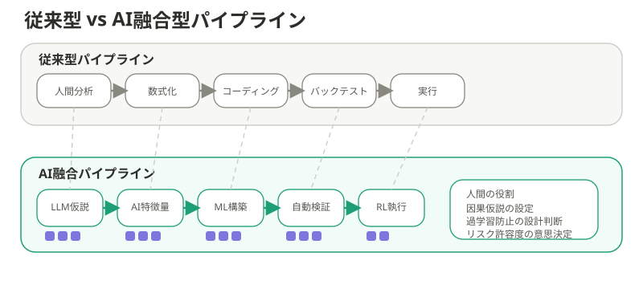
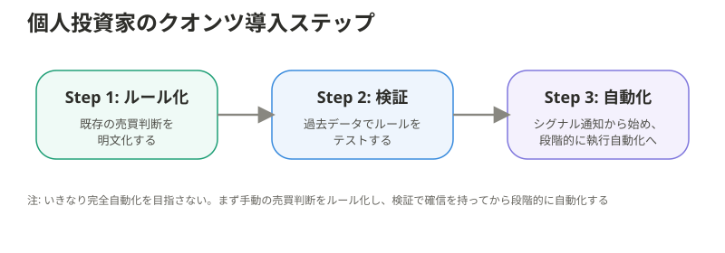

クオンツ戦略とは — 個人投資家が知るべき5つの戦略類型とAI活用の最前線¶
対象 / ポイント
対象: 投資経験はあるが、クオンツ戦略の仕組みを体系的に理解したい個人投資家
ポイント: - クオンツ戦略は、感覚ではなく再現できるルールで売買判断を切る手法の総称 - 代表的な5類型は、狙う歪みも失敗しやすい局面もそれぞれ異なる - AIの本当の変化は、予測を全部任せることではなく、仮説生成から検証速度までを引き上げた点にある
クオンツ戦略とは、 「こうなったら買う、こうなったら売る」を先に決める投資手法だ。 相場観そのものより、判断をあとから再現できることを重視する。 何を買うかより、 どう決めるかの設計が中心になる。
1. クオンツ戦略とは何か — 勘で売買する方法との違い¶
まず最初に、比較する相手をはっきりさせたい。 人が経験や勘で判断する方法を、 ここでは裁量トレードと呼ぶ。 それに対して、 数字で決めたルールに従って判断する方法がクオンツ戦略だ。

たとえば 「決算が強かったから買う」は裁量寄りの判断だ。 何をもって強いとみなすかが、 人によって変わるからである。 クオンツなら、 売上成長率や出来高などの条件を先に数字で決める。
これで初めて、 そのルールが過去にどれくらい勝ったかを比べられる。 同じ条件で何度も試せるので、 投資判断が「感想」ではなく「検証」に変わる。 ここが最大の違いだ。
ただし、クオンツにも弱点はある。 相場の環境が変わると、 過去に効いたルールが急に効かなくなる。 さらに、過去データに合わせすぎると、 将来では通用しないルールを作ってしまう。
2. 5つの戦略類型¶
クオンツ戦略にもいくつか型がある。 最初に5つを地図として並べると、 どの戦略が何を狙っているかをつかみやすい。
- モメンタム: 上がっているものは、しばらく上がりやすいと考える
- 平均回帰: 上がりすぎ、下がりすぎは、その後戻りやすいと考える
- ファクター投資: 割安さや収益性など、銘柄の性質で点数をつける
- 統計的裁定: 本来似た動きをする2つの資産のズレを狙う
- イベントドリブン: 決算やM&Aなど、特定イベントの影響を狙う
2.1 モメンタム — トレンド継続を捉える¶
最もわかりやすいのは、 強い銘柄はしばらく強いままになりやすい という発想だ。 実務では、 過去数か月でよく上がった銘柄を上位に並べて使う。1

ポイントは、 高くなったから即危険と決めつけないことだ。 「過去20日で一定以上上がったら買う」のように、 先に条件を固定して使う。 弱点は急反転で、 トレンドが終わるとまとめて崩れやすい。
2.2 平均回帰 — 行き過ぎからの戻りを狙う¶
モメンタムとは逆に、 行き過ぎた値動きは戻りやすいと考えるのが平均回帰だ。 短期で売られすぎた銘柄や、 普段の値動きから大きく外れた場面を狙う。 古典的な研究でも、 極端に勝った銘柄と負けた銘柄が、 後で逆転しやすいことが示されている。2

ここでよく使われるのがボリンジャーバンドだ。 これは、 普段の値動きの範囲を帯で見せる道具と考えればよい。 価格がその帯を大きくはみ出したら、 「少し行き過ぎではないか」と疑う。3 ただし、 強い上昇や下落が続く相場では逆らいすぎて負けやすい。
2.3 ファクター投資 — 銘柄特性を合成スコア化する¶
ファクター投資は、 銘柄の「性質」に点数をつける考え方だ。 たとえば、 割安さ、値動きの強さ、財務の安定感などを数値化して、 総合点の高い銘柄を選ぶ。 Fama-French 3ファクターモデルは、 この考え方を広く知られるようにした代表例である。4
実務では、 1つの性質だけで決めるより、 複数の性質を組み合わせる方が安定しやすい。 1つだけに頼ると、 その性質が不調な時期に全部崩れるからだ。

ただし、 指標は多ければ多いほどよいわけではない。 項目を増やしすぎると、 それらしく見えるだけの複雑なルールになりやすい。 何を重視するかは、最後まで人が決める必要がある。
2.4 統計的裁定 — ペアの乖離と収束¶
統計的裁定は、 普段は似た動きをする2つの資産のズレを狙う戦略だ。 代表例はペアトレードで、 たとえば似た業種の2銘柄の値動きが急に離れたとき、 高すぎる方を売り、安すぎる方を買う。5

この戦略のよい点は、 市場全体が上がるか下がるかを当てなくてよいことだ。 一方で、 「似た動きが続くはず」という前提が壊れると危ない。 見た目だけで似ている銘柄を組ませると失敗しやすい。
2.5 イベントドリブン — 決算・M&A等のカタリスト¶
イベントドリブンは、 決算、M&A、自社株買い、指数入れ替えのような 「何かが起きる日」に注目する戦略だ。 材料が出た直後は、 株価が一気に動くことがある。 その動きを、 あらかじめ決めたルールで取りにいく。6

個人投資家にとって大事なのは、 ニュースをたくさん追うことより条件を固定することだ。 どのイベントを対象にして、 発表後何日以内に、どんな条件で入るかを先に決める。 イベントは分かりやすいぶん、 思いつきで動くと裁量トレードに戻りやすい。
3. バックテスト — クオンツの「命」と3つの落とし穴¶
バックテストとは、 売買ルールを過去データで試す作業のことだ。 クオンツではこの確認が中心で、 良さそうなアイデアでもここを通らないと意味がない。 大事なのは、 「たまたま勝っただけではないか」を疑う視点である。

図の5番目は、 データを「学習用」と「確認用」に分けて再検証する工程だ。 過去の全部を一気に使うのではなく、 見てよい期間と、後から答え合わせする期間を分ける。 こうすると、 過去に合わせすぎたルールを少し見抜きやすくなる。
落とし穴は3つある。 先読みバイアスは、 当時は知らないはずの情報を混ぜるミスだ。 サバイバーシップバイアスは、 今も残っている銘柄だけを見てしまうミスだ。 過学習は、 過去にだけぴったり合うルールを作ってしまうミスである。
Baileyらは、 バックテストを繰り返すほど、 偶然良かった戦略を本物と誤認しやすいと示した。7 だから見るべき数字は勝率だけではない。 最大ドローダウン、売買コスト控除後の成績、 インサンプルとアウトオブサンプルの差、 ウォークフォワードでの頑健性まで見て、初めて「残す理由」が生まれる。
ここまで通った戦略だけが、次の段階に進める。 そこで効いてくるのがAIだ。 AIは魔法の予測器というより、 捨てるべき仮説を早く捨てるための増幅器として見る方が現実に近い。
4. クオンツ戦略 × AI — パイプライン変革の実態¶
AIはクオンツ戦略そのものを置き換えたというより、 パイプラインの各工程を速くした。 仮説の洗い出し、 決算短信や説明会の文字起こしからの特徴抽出、 モデル比較、執行条件の探索まで、 以前は別々の専門領域だった作業がつながり始めている。 BloombergGPTのような金融特化LLMは、 その流れを象徴する例だ。8

図の比率は市場全体の実測値ではなく、 どの工程でAIが効きやすいかを示す相対イメージである。 AIは大量の文章や時系列から候補特徴量を掘るのが得意で、 OECDもポートフォリオ運用、取引、 リスク分析でのAI活用拡大を整理している。9 一方で、相関と因果を取り違えない設計、 過学習を防ぐ検証、 どこまで損を許容するかの意思決定は、まだ人間の責務が重い。

この違いは大きい。 AI融合パイプラインでは、試せるモデル数も特徴量の候補も急増する。 するとアイデアは増えるが、偽陽性も増える。 実務で起きている変化は「AIが当ててくれる」ことではない。 より多くの仮説を、より速く生成し、より速く捨てられる ようになったことだ。
5. 個人投資家がクオンツ的アプローチを取り入れるには¶
個人投資家が最初にやるべきことは、高度な機械学習ではない。 すでに行っている判断を、言葉ではなく条件に直すことだ。 「決算が良ければ買う」ではなく、 「売上成長率、利益率、出来高の3条件を満たしたら買う」まで落とす。 そこから検証が始まる。

次に必要なのは、小さく試す順序である。ルール化、過去検証、通知の自動化、最後に執行の一部自動化という順で進めれば、失敗の原因を切り分けやすい。いきなり売買ボタンまで自動化すると、戦略の欠陥と実装の欠陥が混ざる。
使うデータも最初はシンプルでよい。終値、移動平均、出来高、決算日といった公開データだけでも、クオンツ的思考は十分始められる。重要なのはモデルの派手さではない。再現できるルールと、検証ログを残す習慣である。
まとめ¶
クオンツ戦略は、相場を数式に置き換える特殊技能ではない。投資判断を再現可能な実験へ変える設計思想だ。AIで参入障壁はさらに下がったが、そのぶん差は「派手なモデルを持つ人」ではなく、「悪い仮説を早く捨てられる人」に移りやすい。
- モメンタムは継続、平均回帰は行き過ぎ、ファクターは銘柄特性、統計的裁定は関係のズレ、イベントドリブンは予定された材料を狙う
- バックテストは勝ちを証明する場ではなく、錯覚を落とす場として使う
- AIは予言者ではなく、仮説生成と検証速度を引き上げる補助輪として使う方が実務に近い
関連記事¶
- リスクとリターンの関係 — 「怖い」を数字に変える
- ボラティリティ — 値動きの「激しさ」を数字で測る
- チャート分析のメカニズム — なぜ「線」が効くのか
- Stock Investment Guide — シリーズトップ
Narasimhan Jegadeesh and Sheridan Titman, Returns to Buying Winners and Selling Losers: Implications for Stock Market Efficiency, The Journal of Finance 48, no. 1 (1993). ↩
Werner F. M. De Bondt and Richard H. Thaler, Does the Stock Market Overreact?, The Journal of Finance 40, no. 3 (1985). ↩
NIST/SEMATECH, What do we mean by "Normal" data?, e-Handbook of Statistical Methods. ↩
Eugene F. Fama and Kenneth R. French, Common Risk Factors in the Returns on Stocks and Bonds, Journal of Financial Economics 33, no. 1 (1993). ↩
Evan Gatev, William N. Goetzmann, and K. Geert Rouwenhorst, Pairs Trading: Performance of a Relative-Value Arbitrage Rule, The Review of Financial Studies 19, no. 3 (2006). ↩
Malcolm Baker and Serkan Savasoglu, Limited Arbitrage in Mergers and Acquisitions, Journal of Financial Economics 64, no. 1 (2002). ↩
David H. Bailey, Jonathan Borwein, Marcos Lopez de Prado, and Qiji Jim Zhu, The Probability of Backtest Overfitting, Journal of Computational Finance (2015). ↩
Shijie Wu et al., BloombergGPT: A Large Language Model for Finance, arXiv:2303.17564 (2023). ↩
OECD, AI in finance, accessed April 15, 2026. ↩